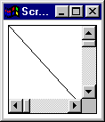
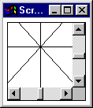
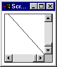

The ScrollPaneExample applet



The ScrollPaneExample applet consists of a ScrollPane instance containing
a CrossDoodle instance. The CrossDoodle instance displays itself with
diagonal, horizontal and vertical lines and the ScrollPane thumbnails can be
used to scroll across the pattern produced, as shown above.